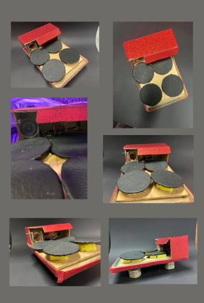
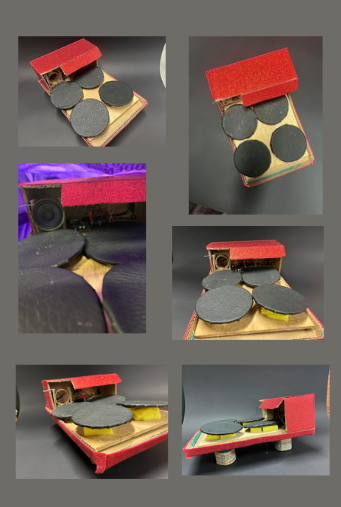

Artistas
Conoce a los músicos y creadores que usan el Midi Stage Pad para producir música en vivo y en estudio.
Galería
Fotos y videos de artistas presentando el producto.
Conoce a los músicos y creadores que usan el Midi Stage Pad para producir música en vivo y en estudio.
Fotos y videos de artistas presentando el producto.
